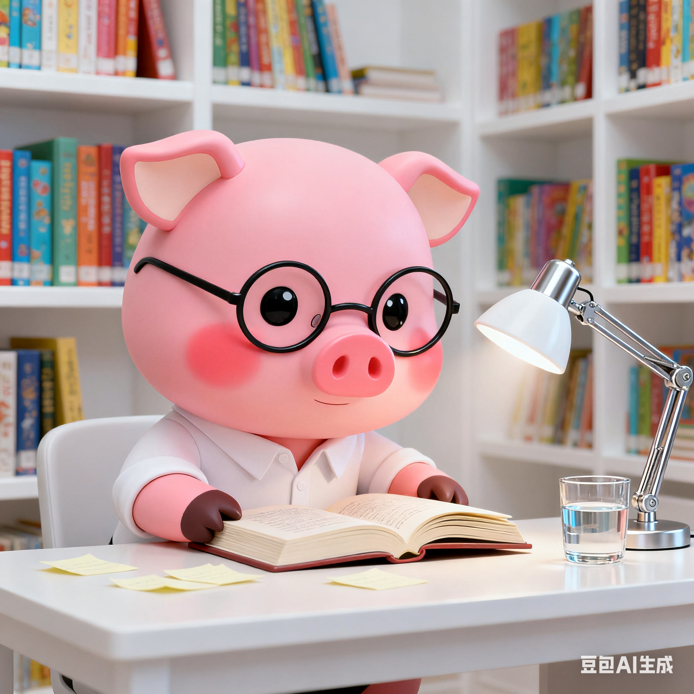
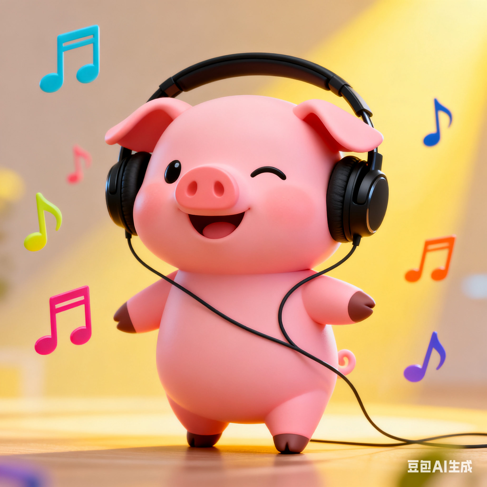
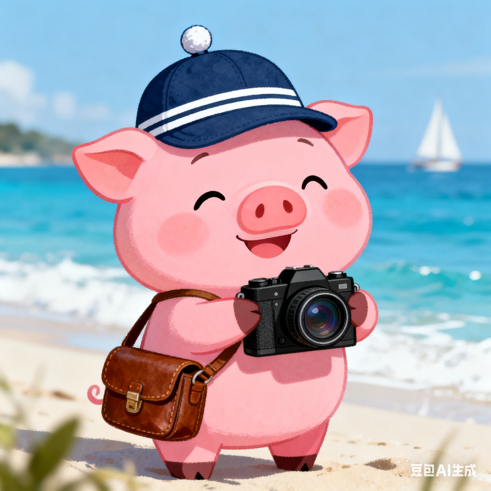

我是李理，一名大三学生，目前就读于南华大学，我的学号是20234080119
这是我在Web开发课程中制作的第一个网站，虽然简单但我非常用心地完成了它。
这是我做的第一个网站
欢迎光临呀～
我是李理，一名大三学生，目前就读于南华大学，我的学号是20234080119
这是我在Web开发课程中制作的第一个网站，虽然简单但我非常用心地完成了它。
我的爱好很广泛，具体有：
我喜欢阅读各类书籍，尤其是科幻小说和历史类书籍。
我喜欢听各种类型的音乐，例如纯音乐、R&B
我喜欢去不同的地方旅行，体验各地的风土人情。

旅行的时候我喜欢用相机记录下美丽的瞬间。
这是一个作业！
通过制作这个网站，我学习到了HTML、CSS和JavaScript的基础知识，虽然简单但收获很大。
如果你觉得做的还行，可以给我点赞：
0感谢您的支持！如果你 有其他建议也可以告诉我～